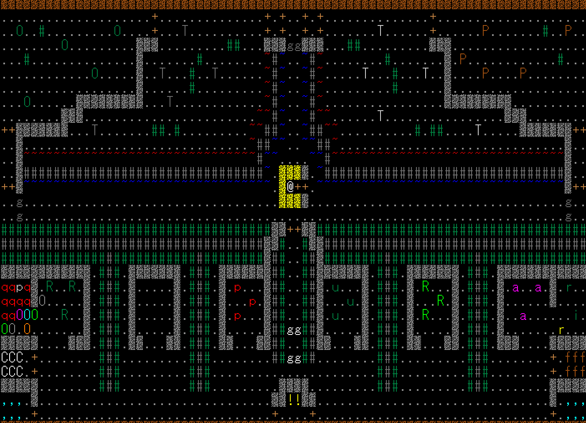

2023/09/09
辺境の地で受けられる重要クエスト。サーペント戦が卒業試験なら中間試験的な立ち位置。報酬のシヴァ靴は貴重な加速付きの足防具。ここをクリアできるかで今後の展開が大きく変わってくる。
敵配置

感知範囲

簡易ガイド

チャート概要
絶対に失敗したくない・低レベルで挑む場合の初心者向けチャート。
敵の感知範囲を上手く活かすことで、動きを固定化している。
右のランダムモンスター配置に最初から起きている邪悪なモンスターがいた場合は、女王アリが起きて、”何かが聞こえた”というメッセージが出るので、チャートを放棄して全力で鎮圧する。
右のランダムモンスター配置に最初から起きている邪悪なモンスターがいた場合は、女王アリが起きて、”何かが聞こえた”というメッセージが出るので、チャートを放棄して全力で鎮圧する。
| モンスター | シンボル | HP | 速度 | 耐性 | 抵抗 | 攻撃属性 | 召喚 | ドロップ | 警戒度 | 感知範囲 | 危険行動など |
|---|---|---|---|---|---|---|---|---|---|---|---|
| S | 修行僧・忍者 | 1881 | 10 | 炎冷毒水 | 乱麻瞬 | 酸毒水 | 救援・悪魔1 | 上質4 | 12 | ウォーター・ボール(50+d76)、救援召喚 | |
| A | アーチャー | 1000 | 10 | なし | なし | 沌 | なし | 上質4 | 20 | 純ログルス(68+10d10)、テレポート | |
| B | . | 847 | 0 | 炎電 | 乱麻瞬 | 盲恐経盗 | ヒドラ召喚 | 特別3 | 25 | 透明・ESP無効・盗み逃げ・ヒドラ召喚 | |
| C | R | 990 | 10 | 毒沌 | 乱麻瞬 | 毒沌知賢盗乱盲 | ヒドラ召喚 | 特別3 | 10 | 放射性廃棄物/カオスブレス・盗み逃げ・ヒドラ召喚 | |
| D | a | 1500 | 10 | 乱麻 | アリ召喚 | 上質4 | 30 | アリ召喚 |
戦士
初心者に人気の職業。イメージ通りの脳筋であり、最高クラスの火力と耐久を持つ。難点は便利能力がなく、魔道具がド下手なことで、性格や種族で補う必要がある。
ビルド例
【チャージマン・ゴーレム・戦士】
パワーに全振りしたビルド。火力・耐久を一切妥協していないにもかかわらず、チャージマンのおかげで最低限の魔道具能力があり、麻痺・混乱・透明視・毒耐性といった序盤の詰み要因を潰す耐性を持っている。【ラッキーマン・クラッコン・戦士】
中盤以降の強さに重点を置いたビルド。それなりに魔道具が使え、クラッコンの加速でクローン地獄を突破しやすい。②右上の穴で上のモンスターを倒す
[倒すモンスター：それ・ジャート→ダゴン]
スタート地点で待つと、それとジャートが寄ってくる。それには対邪悪結界が有効。もたもたすると盗み逃げされてしまう。ジャートには反射とパニモンが有効。
倒し終わったらスタート地点から少し右下に行き、ダゴンを一匹だけ誘導する。反感装備を使う場合、加速して3～4tほどつけてから外すと一匹だけ釣れる。繰り返してダゴンを全滅。
スタート地点で待つと、それとジャートが寄ってくる。それには対邪悪結界が有効。もたもたすると盗み逃げされてしまう。ジャートには反射とパニモンが有効。
倒し終わったらスタート地点から少し右下に行き、ダゴンを一匹だけ誘導する。反感装備を使う場合、加速して3～4tほどつけてから外すと一匹だけ釣れる。繰り返してダゴンを全滅。
＠:敵詳細
| モンスター | シンボル | HP | 速度 | 耐性 | 抵抗 | 攻撃属性 | 召喚 | ドロップ | 警戒度 | 感知範囲 | 危険行動など |
|---|---|---|---|---|---|---|---|---|---|---|---|
| ダゴン | u | 1881 | 10 | 炎冷毒水 | 乱麻瞬 | 酸毒水 | 救援・悪魔1 | 上質4 | 12 | ウォーター・ボール(50+d76)、救援召喚 | |
| ジャート | p | 1000 | 10 | なし | なし | 沌 | なし | 上質4 | 20 | 純ログルス(68+10d10)、テレポート | |
| それ | . | 847 | 0 | 炎電 | 乱麻瞬 | 盲恐経盗 | ヒドラ召喚 | 特別3 | 25 | 透明・ESP無効・盗み逃げ・ヒドラ召喚 | |
| ガチャピン | R | 990 | 10 | 毒沌 | 乱麻瞬 | 毒沌知賢盗乱盲 | ヒドラ召喚 | 特別3 | 10 | 放射性廃棄物/カオスブレス・盗み逃げ・ヒドラ召喚 | |
| 女王アリ | a | 1500 | 10 | 乱麻 | アリ召喚 | 上質4 | 30 | アリ召喚 |
＠:Tips
・ランダム配置は日数が進むごとにnasty生成で強力な敵が出やすくなるが、48日までならnasty生成は適用されない。
・何もしていないのに何かが聞こえたら女王アリが起きた可能性が高い。放置すると召喚合戦が始まったり、ガチャピンのカオスブレスでアリが変異したりするので、最優先で鎮圧したい。
・耐火の薬や天恵の巻物、ヒーローの薬は、効果時間中に飲むと効果を延長できる。事前にがぶ飲みするのして挑むのもアリ。
・隠密が高い(10～15以上)場合初手でテレポートして女王アリやそれ、ランダムモンスターを倒す戦略も有効。
・テレパシーがあれば、ダゴンやガチャピンを一匹だけテレパシーで感知した状態で反感装備をつけるとそのモンスターだけ誘導できる。
・何もしていないのに何かが聞こえたら女王アリが起きた可能性が高い。放置すると召喚合戦が始まったり、ガチャピンのカオスブレスでアリが変異したりするので、最優先で鎮圧したい。
・耐火の薬や天恵の巻物、ヒーローの薬は、効果時間中に飲むと効果を延長できる。事前にがぶ飲みするのして挑むのもアリ。
・隠密が高い(10～15以上)場合初手でテレポートして女王アリやそれ、ランダムモンスターを倒す戦略も有効。
・テレパシーがあれば、ダゴンやガチャピンを一匹だけテレパシーで感知した状態で反感装備をつけるとそのモンスターだけ誘導できる。